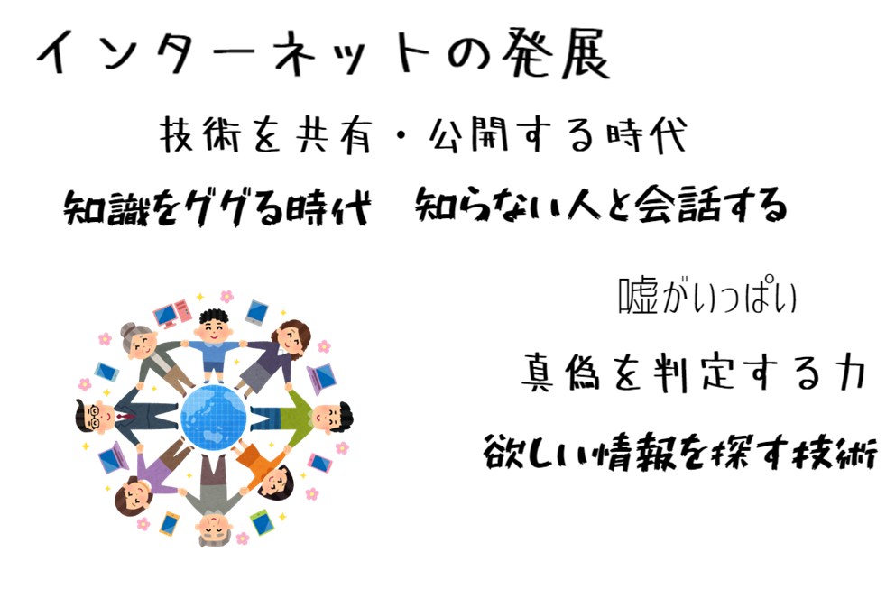

■ 自己紹介
有限会社アイ.タイムズ ＋ ミライロジック株式会社。
趣味：プログラミング、ときどき 三線。
プログラミング業界のなかで３０年ほど。
奄美市名瀬末広町でプログラミング教室。
いまは新しいゲームエンジン制作にはまってます。
- ここで、自作中のゲームエンジンの紹介を少しする
プログラミングが活躍する場面
プログラムが活躍するところはどんな風なところなのか、ざっくりと分類してみます。
フロントエンドとバックエンド

皆さんがよく目に触れるのは フロント系です。ＷＥＢサイトやスマホアプリなどで目に触れる部分をフロント系と呼びます。
フロント系はみなさんの手元にあるＰＣやスマホの中で動くプログラムです。
表示するためにデータを加工したりする部分がバックエンド系です。
バックエンド系は大勢の人のＰＣやスマホのデータを集中管理するコンピューターのプログラムです。
娯楽向けとお仕事向け

小さなシステムと大きなシステム

コンピュータの変革
大昔

大昔のプログラムは配線そのものです。計算する内容がかわるたびに配線をし直します。
配線をまちがえると計算結果が狂います。そして簡単な計算しかできないです。
人間が計算するよりは計算が早いですが、今のスマホに比べるとまるでおもちゃレベルの計算速度です。 疲れずにずっと繰り返して計算できるので、第二次世界大戦のころの弾丸・砲弾の発射角度、火薬量などのマニュアル作りのための計算に活躍しました。
プログラミングというものはほんの一握りの人たち（天才たち）の仕事でした。
そのわりにプログラミングという仕事はあまり重要視されていませんでした。やっつけ仕事みたいな感じでした。
大昔のプログラムは配線そのものです。そしてマシンスペック（性能）も貧弱でした。 貧弱ななかでも 効率よく計算をさせようと「頭のよい天才たち」が頭のひねってプログラミング（＝配線）をしました。
「頭のよい天才たち」が得意になって パズルを作ったり解いたりするようにプログラミングをするので、第三者からみるとわけがわからない代物でした。
ときには プログラムを作成した本人も なにをしたかったのかわからなくなったり、プログラムを直したり改良することが難しいものでした。
20年～30年ほど前
マシン性能もアップしていき、大型コンピューターを製造販売するグローバル企業が出現してきました。
グローバル企業（＝メーカー）に所属する その企業の製品を熟知した エンジニアたちが活躍する時代になりました。
コンピューターが数多く販売されていきますが、とってもお高いですので、購入できるユーザーは 国レベル（省庁）、超大企業 に限られました。
メーカーが販売するコンピューターの中だけで完結する世界なので、広い世界とつながることがありませんでした。
なにせ、インターネットが存在しない時代ですから。
20年～30年ほど前
コンピューターのお世話をしたり、プログラミングをしたりするのは、メーカーの専門教育をうけた数が少ないエンジニアさんたちでした。
そして、エンジニアさんたちを使ってプログラミングをするのは、とってもお高い費用がかかる時代でしたし、人数も少ないのでプログラミングできる量も限られていました。
ユーザーさんたちの要望が年々グレードアップしますが、それに応えることができるだけのエンジニアの数が足りていない時代でした。
プログラマーの人数が足りない！、どうしたら増やせるのか？、どうしたら プログラミングを早くできるのか？ と問題続出の時代でした。（今もですけど）
20年ほど前以降
大型コンピューターは億の単位のお金が必要でした（一括買取りできないのでリースが大半）。 ハードウェア製造の技術は年々進化し、個人が使うためのコンピューターが作られて世界中でヒットしてきます。 マシンの購入価格も お高いけれど個人で手が届く範囲までお安くなってきて、自宅にパソコンをおいて使いだすようになってきました。
それにともなって、プログラミングに興味がある人たちが自前のパソコンでプログラミングを始めるようになりました。

インターネット網が充実していき、モバイル端末を使うひとが増えていき、生活の一部にインターネット技術が入り込んできています。
世界中に知識ノウハウや楽しいことを提供するひとたちがいて、知識やノウハウを検索して探す、楽しむことが、毎日の生活の一部になってきています。
いまでは『当たり前』に存在する『インターネット』。これを基盤にした便利なプログラムがお金になるようになってきて、プログラミングの世界でも『インターネット』は欠かせないものになっています。
プログラミングに興味がある人たちが 知識を発信したり、『教えてプリーズ』な感じで質問をしたり、プログラミングの学びがすこしづつ広がってきました。
今までは何かを学習するときは、専門書（お高い）を購入して勉強する、専門の学校に入って勉強する方法しかなかったのですが、インターネットを経由して 学ぶ場が増えてきました。
コンピューターアプリの種類が増え、アプリを利用するユーザ数も増え、アプリの利用のされ方もより便利に、より簡単にしたいという要望が高まってきています。
新しいプログラミング手法、新しいプログラミング言語、簡単にプログラミングしようというアイデアを、世界中の技術者が持ち寄り、一緒に作り上げていく流れが年々増えてきています。
人類の財産をみんなで作るという理念に共感した人たちが毎日頑張っています。
２０２０年ごろ～（ＡＩが生活の一部になる？）
近年は、ＡＩを使ったサービス提供への挑戦が増えてきています。
インターネットの登場のときのように、ＡＩも生活の一部に組み込まれていき、身の回りに自然に『ある』といった将来が予想されます。
ＡＩは便利すぎて、依存しすぎて問題になるかもしれません（インターネット利用と同じで）。
自分で考えることを忘れた人は知らないうちにＡＩ依存症になり、考えることができない人になるでしょう。
ＡＩはヒントをもらう程度に抑えて、本当とウソを見抜いてＡＩに「間違っているぞ」と指摘できるぐらいに、自分を成長させていくことがますます大切になってくるでしょう。
エンジニアの種類
それぞれ、オーバーラップすることが多く、それぞれ奥が深く、ひとりですべてをやり切ることは困難です（趣味でやるなら別ですがね）。
プログラマー
欧米圏と日本ではプログラマーの意味が異なるようです。日本ではプログラマーのことを欧米ではコーダー( Coder )と呼びます。
作るプログラムの仕様が決められていて、コード（ Code ）を作る人のことです。初級テストエンジニアと兼任することが多いです。
マークアップエンジニア
ＷＥＢサイトを作るエンジニアの人たちです。マークアップとは HTML や CSS のことです。
フロントエンドエンジニア
端末上で動くアプリを作る人たちのことです。主流なのはブラウザ（ Chrome や Safari , Edge ）に表示するページを作ったりアプリを作ったりする人たちのことです。
マークアップエンジニアと兼任することが多いです。ジャバスクリプト( JavaScript )の知識が必須です。 他のプログラミング言語も使われています。
サイトやアプリの見栄えを気にする分野です。デザイナーの仕事も兼任する人もいます。
サーバーサイドエンジニア
端末へデータを配信するサーバー上でいうごくプログラムを作るひとたちです。速度とセキュリティを気にする分野です。
このためのプログラミング言語はたくさんあります。Java, Ruby, PHP, Python, Go, などなど。
ゲームエンジニア
ゲームクリエーター、ゲームプログラマーと呼ばれる人たちです。ゲームシナリオ作り、ゲームキャラクターづくり、ゲームプログラミング、などなど。
いかに楽しめるものを作るかを気にする分野です。
プログラミングをする仕事の風景
必要な技術知識が必要ですが、それ以外は ふつうの仕事とあまり変わらないと思ってください。

どんな仕事でも大事なことですが、『喜ぶ』という感情を忘れてはいけません。素直に『喜ぶ』ことが大切です。
どんな仕事でも同じですが、地味な作業の繰り返しもあるでしょう。修行期間が必ずあります。そこのなかから『喜び』を見つけると楽しいです。
『喜ぶ』ということを学ぶ ！ のが仕事です！ 仕事をする意味は 喜び方を知る（体験する、学ぶ）ことです。喜びかたを知らない人生はつまらないですね。
どんな仕事でもつらいことがありますが、プログラマーの仕事は『喜ぶ』機会が多いほうの仕事だとおもいます。
なぜなら、自分の成長を感じる局面が多いからです。先月はできなかったことができる、新しいことにチャレンジして経験を積んだ、などなど、成長を自覚することが多いからです。
ＩＴ業界（特にプログラマー）の仕事の仕方
一日中、キーボードをカチャカチャしてモニター眺めて、一人でもくもくと没頭しているような気がしていませんでしたか？
大工さんが一日中木材を加工していたり柱を立てていると思うのと同じです。大工さんは クライアントとの打ち合わせ、業者さんとの打ち合わせ、お家の設計図を描いたり、仕入れや物品チェックしたりして準備を怠りなく、そのあと現場で一気に作業するのです。現場作業だけを大工仕事と思ってはいけません。
プログラマーさんも準備は怠りなく事前に作戦をよくたてて、みんなで一気に仕上げます（ここがキーボードカチャカチャしているように見えるところ）。
私はコミュ症ぎみ、誰とも話しをしないで仕事ができるプログラマーが向いているかも！ それも間違えています。
プログラマーは まわりの人間とかかわっていかないと仕事が進みません。独りよがりでは仕事ができないんです。
なぜなら、一人でできる仕事はほとんどないからです。（ 世界に数十人しかいないような 一部の大天才 の人は一人で仕事できるかもしれないけどね ）
皆さんに伝えたいこと
「将来はゲームプログラマーになりたい」って人とときどき話すことがあります。
ゲームプログラマーのためにプログラミングを勉強したほうがいい！ ⇒ 中学を卒業したらＩＴ関係の専門的な学校に行きたい（いや行くべきだ）
学校の勉強が好きになれないから、数学なんて役にたたないよ！、理科、社会、英語、なんのために勉強しているのかわからないよ！ゲームクリエーターになるんだから、プログラミングの勉強を早く始めないと間に合わない（とあせる）
と話してくれたりします。
好きなものがあるのはよいことですし、夢をもつことはいいことです。得意なことを作ることも大事なことです。
でもよく考えてみてください。
小学校・中学校は無償！国民の税金で成り立っています。
全然役にたたないことを大金をとうじてやっているわけがないじゃないですか？役にたたないと思い込むのは間違ってない？
学校の勉強がとても素晴らしい、１００点満点です！とまではわたしはいいませんけれど。
切り捨ててよいわけではないですよ。思いもよらないところで役にたつのですよ。
先端的なＩＴ技術は英文で発表されることがおおいし、プログラミング言語は英語を基礎にしている。
魅力的なゲームは、
魅力的なキャラクターデザインがある ⇒ お絵描きが上手、漫画かくのが好き な人が向いているかも
シナリオがしっかりとしている ⇒ 物語を読むのが好き、考えるのが好き な人が向いているかも
ニッチな分野を掘り下げてファンを獲得 ⇒ 城が好き、古代史がすき、アニメが好き、歴史がすき、な人が向いているかも
好みをついてくる ⇒ 人の気持ちがわかる人、お話しするのがすきなひと、喜ばせるのが好きなひと が向いているかも
中学、高校の間で、そのときしか吸収できないことを いろんなことを、いっぱい吸収してほしいです。どんなことでも役にたちます。
一瞬一瞬を大事に 知識や経験を吸収してください。
わたしはできない人だからとあきらめるのは残念です。あなたがうれしいことをよく考えて、うれしいことを手に入れるためにすこしづつ準備してください。
準備は大事ですよ。頑張ってね。